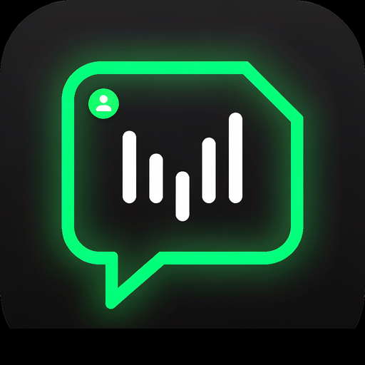
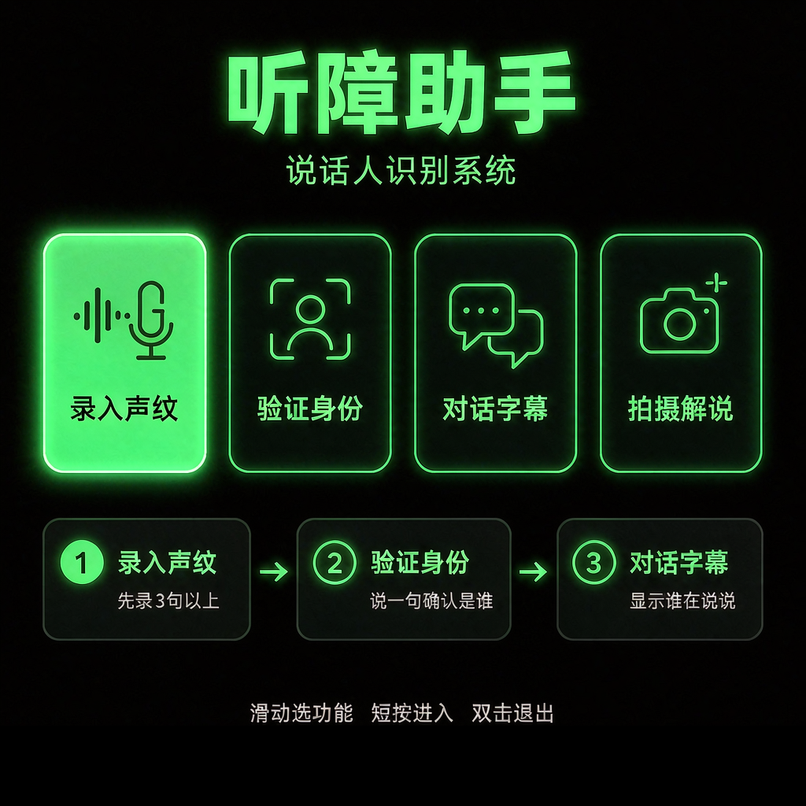
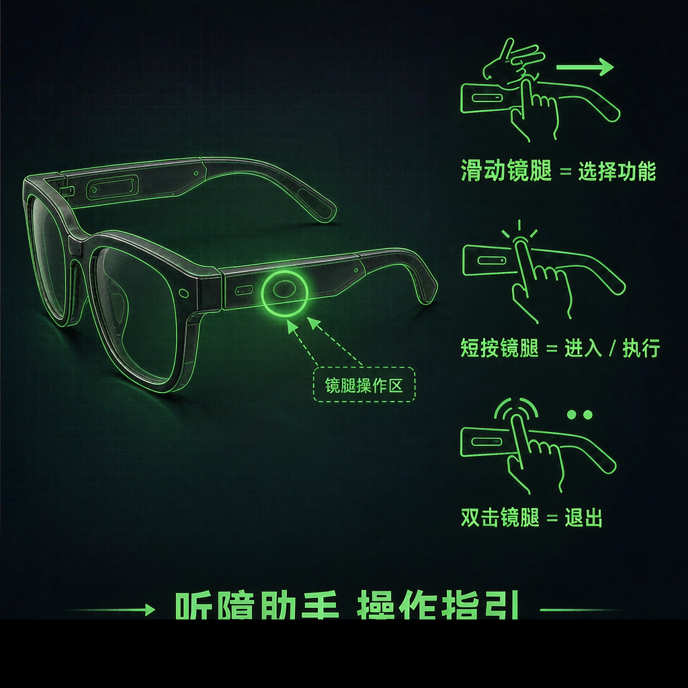

痛点
面对面交流时，
你分得清 谁在说 吗？
听不清声音的人，
更难感知「谁在说话、说了什么」。

听障助手
一款运行在 Rokid 智能眼镜 上的对话辅助智能体
功能一
录入声纹

把常接触的人，记下来
按提示朗读，录满 3 句以上 建立声纹。
建议为家人、同事各录一次。
首次必做 · 之后才能 识别他们
核心功能
对话字幕
妈妈今天天气真好，我们去散步吧
爸爸午饭想吃什么？
陌生人2您好，请问电梯在哪层？
同事·小林会议改到三点了
功能二
验证身份
说一句话，确认「现在说话的是谁」
匹配：妈妈 相似度 94%
需先完成 录入声纹
功能三
拍摄解说

拍下眼前，AI 帮你「看」
拍摄画面，由 AI 生成解说并语音播报。
看不清的事物，眼镜替你念出来。
戴上眼镜，
重新 看见 每一句对话
听障助手 · 基于 Rokid AIUI
面对面交流时，你分得清谁在说话吗？听不清声音的人，更难感知谁在说话、说了什么。
听障助手，一款运行在 Rokid 智能眼镜 上的对话辅助智能体。
第一步，录入声纹。按提示朗读，录满三句以上，建立声纹。
核心功能，对话字幕。实时把对方的话，变成带说话人姓名的字幕。
想确认身份，用验证身份。说一句话，系统给出最匹配的人与相似度。
看不清眼前事物，用拍摄解说。拍下画面，AI 生成解说并语音播报。
戴上眼镜，重新看见每一句对话。听障助手，基于 Rokid AIUI。
听障助手 · AIUI VOICEPRINT